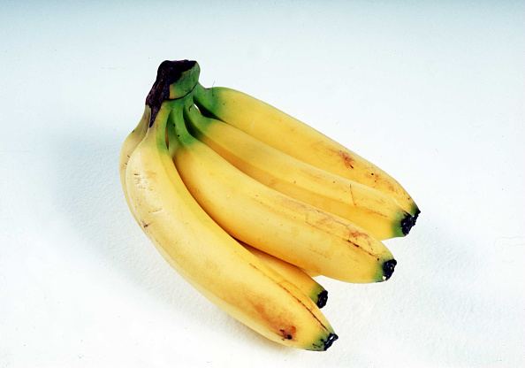
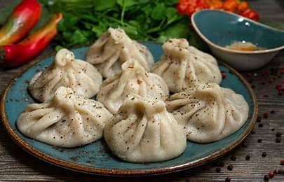

my favrorite foods

A banana is an elongated, edible fruit – botanically a berry[1] – produced by several kinds of large treelike herbaceous flowering plants in the genus Musa. In some countries, cooking bananas are called plantains, distinguishing them from dessert bananas. The fruit is variable in size, color and firmness, but is usually elongated and curved, with soft flesh rich in starch covered with a peel, which may have a variety of colors when ripe. It grows upward in clusters near the top of the plant. Almost all modern edible seedless (parthenocarp) cultivated bananas come from two wild species – Musa acuminata and Musa balbisiana, or hybrids of them.
.jpg)
The orange, also called sweet orange to distinguish it from the bitter orange (Citrus × aurantium), is the fruit of a tree in the family Rutaceae. Botanically, this is the hybrid Citrus × sinensis, between the pomelo (Citrus maxima) and the mandarin orange (Citrus reticulata). The chloroplast genome, and therefore the maternal line, is that of pomelo. There are many related hybrids including of mandarins and sweet orange. The sweet orange has had its full genome sequenced.
The orange originated in a region encompassing Southern China, Northeast India, and Myanmar; the earliest mention of the sweet orange was in Chinese literature in 314 BC. Orange trees are widely grown in tropical and subtropical areas for their sweet fruit. The fruit of the orange tree can be eaten fresh or processed for its juice or fragrant peel. In 2022, 76 million tonnes of oranges were grown worldwide, with Brazil producing 22% of the total, followed by India and China.

Khinkali (Georgian: ხინკალი [ˈχiŋkʼali] ⓘ, sometimes Romanized hinkali or xinkali) is a dumpling in Georgian cuisine. It is made of twisted knobs of dough, stuffed with meat or vegetables and spices.[1][2] The concept of dumplings is said to have been carried west from China, across Mongolia, Russia and Georgia, by the Mongols in the 13th century.
Ingredients
The fillings of khinkali vary with the area. The original recipe, the so-called khevsuruli, consisted of only minced meat (lamb, beef or pork mixed), onions, chili pepper, salt, and cumin.[3] However, the modern recipe used mostly especially in Georgian urban areas, the so-called kalakuri, uses herbs like parsley and coriander. Mushrooms, potatoes, or cheese may be used in place of meat. Beef or lamb is usual in halal and kosher, which never include pork for religious reasons.
Etiquette
Black pepper is usually used for seasoning.
Khinkali is eaten plain or with ground black pepper. The meat filling is uncooked when khinkali is assembled, so when it is cooked, the juices of the meat are trapped inside the dumpling. To make khinkali juicier, usually warm water or broth is added to the minced meat. Khinkali is typically consumed first by sucking the juices while taking the first bite, similar to xiaolongbao, in order to prevent the dumpling from bursting. The top, where the pleats meet, is tough, and is not supposed to be eaten, but discarded to the plate so that those eating can count how many they have consumed. In Georgia, this top is called the kudi (Georgian: კუდი, "tail") or k'uch'i (Georgian: კუჭი, "stomach").
There is a widespread etiquette in Georgia to use only one's bare hands while consuming these dumplings. The using of utensils, like a fork, is considered incorrect or childish. This is because juice is an important part of khinkali; using a fork will rupture the khinkali and the juice will be spilled.